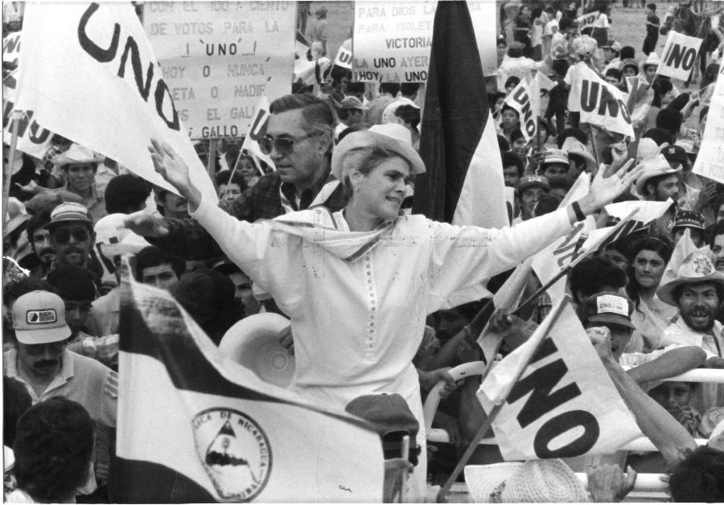
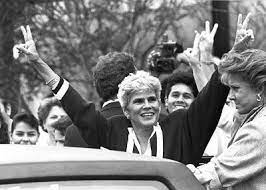
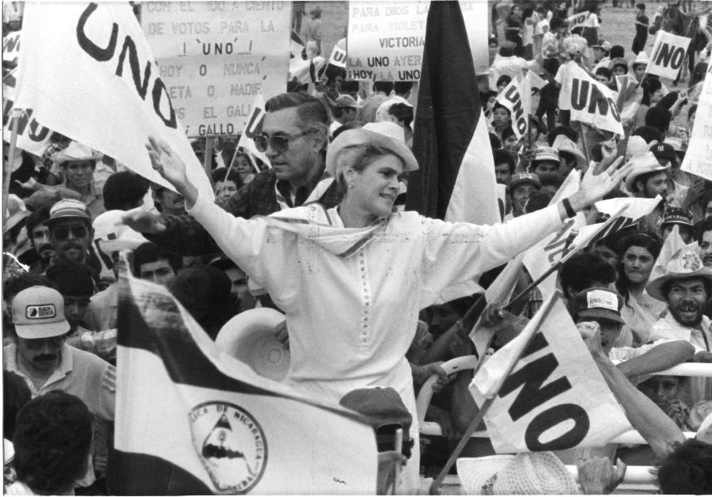
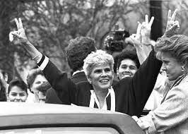

Presidenta de la republica
Biografia
Violeta Barrios Torres nació en Rivas, el 18 de octubre de 1929, es una de los siete hijos del matrimonio formado por Carlos Barrios Sacasa y Amalia Torres Hurtado, familia de clase alta de terratenientes.

INFORMACIÓN PERSONAL
- Nombre: Violeta Barrios de Chamorro
- Fecha nacimiento: 18 de octubre de 1929
- Educacion: Our lady of the lake Uiversity, Backstone college for girls
- Ocupacion: Politica y periodista
En 1949, conoció a Pedro Joaquín Chamorro Cardenal (1924-1978), de 25 años de edad. Era hijo mayor de Pedro Joaquín Chamorro Zelaya, director del periódico La Prensa y descendiente de Fruto Chamorro, primer presidente de la república de Nicaragua en 1854 y nieto de Pedro Joaquín Chamorro, presidente de Nicaragua entre 1875 y 1879. El 24 de septiembre de 1951 nació su primer hijo, Pedro Joaquín Chamorro Barrios, y la familia se traslada a casa de los padres de Joaquín en el barrio de San Sebastián, en Managua, cerca de la sede del periódico. En 1952, su marido Pedro Joaquín Chamorro Cardenal, comenzó a dirigir el periódico La Prensa. En 1953 nació su segunda hija Claudia Lucía y la Sociedad Interamericana de Prensa (SIP) lo eligió como miembro y al año siguiente (1954) nació otra niña, Cristiana, y los Chamorro se trasladaron a vivir a Casa Colorada, El Crucero. En 1956 nació su último hijo Carlos Fernando. En 1966 su marido Joaquín Chamorro y Fernando Agüero Rocha miembros ambos del Partido Conservador, fundaron la Unión Nacional Opositora (UNO), una coalición de los 5 partidos opuestos al somocismo para ganar las elecciones del 5 de febrero de 1967 contra el General Anastasio Somoza Debayle, hijo de Somoza García y candidato del oficialista Partido Liberal Nacionalista (PLN). El 10 de enero de 1978, Pedro Joaquín Chamorro fue asesinado cuando se dirigía a su periódico, siendo enterrado el día 12 de enero. Violeta condena el asesinato y culpa al Gral. Anastasio Somoza Debayle. Violeta Barrios se hizo cargo de la dirección del periódico La Prenda, asume la bandera de lucha por las libertades públicas y los derechos humanos en la línea del Director Mártir Pedro Joaquín Chamorro y, tanto durante el somocismo como en el sandinismo, demanda democracia, justicia y esclarecer el crimen, lo que nunca se logró. El 11 de junio de 1979 Somoza logró su objetivo más deseado: arrasar La Prensa. Ese mismo día que bombardearon La Prensa, Violeta Barrios aceptó integrar la Junta de Gobierno de Reconstrucción Nacional.
 



Protocolo de transición
Inicio del gobierno de Violeta Chamorro
26 de febrero de 1990
Después de la derrota del FSLN en las urnas y el traspaso del gobierno a Violeta Chamorro, se inició un complejo proceso de transición política y económica en todos los órdenes de la vida nacional, caracterizado por un clima de incertidumbre y la existencia de, principalmente con una gran oposición, que exigían el desmantelamiento de las fuerzas armadas sandinistas, la inmediata devolución de las propiedades confiscadas y la privatización de las empresas estatales.
27 de febrero de 1990
La coyuntura exigía una solución, con el fin de desactivar la amenaza de una guerra civil y una futura intervención militar por parte de EUA, ante ello, el 27 de febrero de 1990 se conformaron dos equipos negociadores presididos por el jefe del Ejército Popular Sandinista (EPS), general Humberto Ortega, y el ingeniero Antonio Lacayo, en su calidad de Ministro de la Presidencia. Además participaron de Joao Baena Soares, Secretario General de la Organización de los Estados Americanos (OEA), Elliot Richardson, representante del Secretario General de las Naciones Unidas (ONU), y Jimmy Carter, ex presidente de los EUA, en calidad de observadores internacionales.
Negociaciones
27 de marzo de 1990
Las negociaciones terminan el 27 de marzo del mismo año, con la firma del Protocolo para la Transferencia del Mando Presidencial, conocido como el Protocolo de Transición. Dentro los acuerdos más importantes encontramos: el reconocimiento de las elecciones como base para la construcción de la democracia y la paz; seguridad jurídica a los beneficiarios de donaciones estatales de propiedades rurales y urbanas, asignados antes del 25 de febrero de 1990; respeto de los rangos, escalafones y mandos del ejército, incluyendo la permanencia del Humberto Ortega como General en jefe del EPS; reducción significativa del ejército; desmovilización de la Resistencia Nicaragüense (RN) antes del 25 de abril para garantizar el traspaso de gobierno en un clima de paz.
27 de junio de 1990
Así, la RN o contra condicionó su desmovilización a la firma de nuevos acuerdos con el gobierno, donde los ex combatientes de la RN recibieron tierras y recursos productivos para asentarse con sus familias, bajo la protección de fuerzas especiales de la ONU. Después de concluida la desmovilización el 27 de junio de 1990, ex miembros de la RN fueron incorporados a la Policía Nacional, y se reconoció a la RN como organización política legal. Al tiempo, el gobierno llegó a un acuerdo con el ejército, con el fin de dar inicio a una rápida reducción de efectivos, por lo que entre 1990 y 1992, el número de efectivos en el ejército se redujo de 86.810 a 21.170 miembros.
Finales de 1990
El desarme de la contra y la drástica reducción del ejército significo solo el inicio del proceso de pacificación y la reinserción de los ex combatientes a la vida civil tuvo graves problemas como: la entrega de ayuda, que dependía de la cooperación externa y los trámites burocráticos se redujeron, ocasionando que muchos de los ex combatientes de la RN retornaran a sus lugares de origen, o se dispersaron por el área rural, invadiendo empresas estatales. Incluso a finales 1990, alrededor de cuatro mil hombres, autodenominados recontras se levantaron en armas al norte y centro del país, exigiendo la entrega de títulos agrarios y recursos productivos.
Ante el surgimiento de los recontras, unos tres mil campesinos sandinistas, se organizaron y conformaron el Movimiento de Auto-defensa Nacional, llamados recompas, los cuales presentaron sus reivindicaciones al gobierno.
Igualmente, surgió un tercer grupo El Frente Prudencio Serrano, conocidos como los revueltos, por hallarse integrado por ex combatientes de la RN y de EPS.
Acuerdos
Entre 1990 y 1994
Así mismo, entre 1990 a 1994, la administración Chamorro suscribió más de 48 acuerdos para lograr la desmovilización, a cambio de ayuda material y la reinserción de los ex combatientes a la vida productiva, favoreciendo unos 24,542 beneficiarios – entre desmovilizados y expatriados -, después de esto, el gobierno no llevo adelante más negociaciones y los nuevos grupos rearmados pasaron a ser perseguidos por el ejército.
Finalmente, con el inicio del gobierno de Chamorro, se puso fin a la economía mixta sandinista y se dio comienzo a una economía de libre mercado. La nueva administración puso en marcha simultáneamente un programa acelerado de liberalización económica, llevando acabo la estrategia de estabilización y reforma estructural, formulada y enmarcada dentro de la visión conceptual del FMI y el BM. Tema que analizaremos en el siguiente apartado.
Protocolo de Managua sobre el desarme.
Dentro del espíritu de la Declaración de Managua, la resistencia, el gobierno de Nicaragua y su eminencia reverendísima cardenal Miguel Obando y Bravo, a través del presente documento acuerdan:


{kind=link}
Acuerdos:
1. Agilizar el cumplimiento de lo contemplado sobre el "compromiso de garantizar la integridad física y moral de todos y cada uno de los combatientes de la resistencia nicaragüense, sus familiares y a la población civil que les acompaña", de la manera siguiente:
a. Traslado inmediato de enfermos graves para que reciban la atención médica indispensable en los hospitales del país.
b. Traslado inmediato de inválidos y lisiados de guerra para ser atendidos en forma especializada en Managua.
c. Crear una comisión compuesta por el gobierno nacional, resistencia nicaragüense, CIAV-ONU y su eminencia reverendísima cardenal Miguel Obando y Bravo para que viaje a Honduras y Costa Rica, con el propósito de que realice una investigación exhaustiva de las condiciones de vida de los familiares de la resistencia, y aplique medidas de emergencia que solucionen los problemas que se detecten.
d. Se insta a la resistencia para que presente de inmediato la lista de viudas y huérfanos, con el propósito de que el INSSBI los incluya en su presupuesto y gocen de las pensiones mensuales a que tienen derecho.
2. Se establece de común acuerdo entre las partes el polo de desarrollo descrito en el documento anexo sobre los polos, conocido como "El Almendro", sobre la base de la propuesta presentada por el gobierno. Se inicia a partir de la fecha una serie de acciones necesarias para su implementación e instalación de los desmovilizados en los polos.
3. El gobierno de Nicaragua se compromete a prestar una ayuda económica mínima a cada desmovilizado.
4. Crear en lo inmediato la policía de orden interno con participación de los ex-combatientes de la resistencia con el objeto fundamental de garantizar la vida e integridad física de los ciudadanos que vivan en los polos. Asimismo se establece el propósito de que estos policías pasen a formar parte de las estructuras del Ministerio de Gobernación. Asimismo se solicitará a la ONU o a un país amigo asesoría técnica para la formación profesional de la policía.
5. Crear las condiciones de seguridad en las zonas desmilitarizadas; para este efecto se considera necesario:
a. Gestionar la ampliación del mandato de las fuerzas de seguridad de la ONUCA.
b. Que el gobierno complemente la asistencia al desmovilizado que sale de la zona de seguridad.
c. Desmilitarizar la zona de conflicto.
d. Continuar recogiendo las armas en manos de civiles en las zonas de conflictos.
6. Garantizar la seguridad de los ex-combatientes que se desmovilizan y salen de las zonas de seguridad y que se radican en los polos; asimismo se mantiene la opción para aquellos que deseen regresar a su lugar de origen. Queda entendido que el que así lo haga asume los riesgos como cualquier otro ciudadano.
7. El gobierno se compromete a nombrar a un representante de los desmovilizados que la resistencia recomiende en los ministerios que tengan que ver con los ex-combatientes y sus familiares, a saber: salud, reforma agraria, trabajo y otros, así como también dos miembros en el Consejo de Dirección del Instituto Nicaragüense de Repatriación.
8. El gobierno de Nicaragua se compromete a dar participación en el gobierno local, es decir, dentro del polo, a los ex-combatientes de la resistencia que se hayan radicado en los polos. Asimismo, los ex-combatientes que regresen a su lugar de origen recibirán de parte de las estructuras del Estado el apoyo necesario para su inserción a la vida civil.
9. Se ratifica la Declaración de Managua, en todos y cada uno de sus puntos, haciéndose énfasis particular mente en lo que se refiere al hecho de que la resistencia pueda convertirse en partido político, hecho que le permitirá su plena inserción en la vida política de este país. 10. En cumplimiento del Acuerdo de Toncontín y su adendum, la resistencia ratifica su compromiso de su desmovilización y desarme a más tardar el día diez de junio de mil novecientos noventa.
Ajustes estructurales
El Estado nicaragüense se orientó dentro de una perspectiva de modelo neoliberal, que promovía los organismos internacionales del llamado Consenso de Washington, el cual pretende que el mercado es el único mecanismo para la asignación justa de recursos, que la justicia social consiste en crear igualdad de oportunidades y la competencia genera justicia en cuanto existe una relación de mercado competitivo y eficiente. Es así, como el gobierno de Violeta Chamorro, inicia la implementación de los denominados PAE. Con el llamado Plan Mayorca, se hicieron esfuerzos a partir de abril de 1990, con el objetivo de contener la inflación a través de una política monetaria restrictiva y la reducción del gasto público. Simultáneamente, se dio comienzo a la liberalización del comercio exterior con la reducción de tarifas de importación y del impuesto selectivo al consumo. Además, se implementó una política cambiaria orientada a unificar la tasa oficial de cambio con el mercado libre a través de devaluaciones semanales y en julio del mismo año, se introdujo una nueva moneda, el Córdoba oro, como unidad de cuenta. Las intenciones del plan eran indexar el córdoba oro al dólar, para posteriormente reemplazarlo por el Córdoba nuevo como unidad de cambio, haciendo posible la estabilidad de precios, esto siempre y cuando se dispusiera de suficientes reservas internacionales dentro del régimen de libre convertibilidad y mantener la paridad del córdoba oro con el dólar.
Las medidas monetarias y fiscales aplicadas no fueron suficientes para estabilizar los precios, la inflación se incrementó y aumentó la circulación del dinero, ocasionando una considerable devaluación de su moneda. Además una economía con precios dolarizados reactivó la espiral de devaluación/inflación, provocando una crisis de liquidez que hizo que la recesión aumentara sin controlar la espiral inflacionaria; en 1990 la inflación se aceleró y alcanzo el 13,490%, la recesión continuó con una reducción del PIB del orden de 0,1% y la subutilización laboral alcanzó el 44,6% de la población activa . EL fracaso del plan Mayorga se puede explicar, por dos factores fundamentales; el primero, por la escasa reacción del sector empresarial; y segundo, por el atraso en el desembolso de las ayudas prometidas por EUA, al no contarse con los recursos esperados, no fue posible respaldar la estabilización de la tasa de cambio que debería servir de ancla para los precios. Como consecuencia las devaluaciones aumentaron la inflación, lo que ocasiono más devaluaciones y las restricciones fiscales y monetarias produjeron más recesión.
A fines de 1990 se implementó el Plan Lacayo, por medio del cual se puso fin a la hiperinflación en 1991. En marzo de ese año se devaluó el Córdoba nuevo en un 400%, generando un alza del 300% en los precios, y se introdujo el Córdoba oro reemplazando el Córdoba nuevo como unidad de cambio. Y en abril, el alza de precios fue del 20%, eliminando la inflación en forma abrupta. Las estrategias del plan consistían en la dolarización de los precios internos y la congelación de la tasa de cambio, y una vez indexada los precios al dólar, se congelo la tasa de cambio a través del establecimiento de la libre convertibilidad córdoba oro/dólar, introduciéndose como medio de cambio el córdoba oro indexado al dólar. En agosto de 1991 se firmó un Acuerdo Stand By con el FMI. Este programa se enfocaba principalmente en la reducción del Estado, especial del ejército, para recordar los gastos, al igual de incrementar los impuestos selectivos al consumo; simplificar y reducir el impuesto a la renta y mejorar la capacidad administrativa y elevar las reservas internacionales netas.
Esta estabilidad cambiaria redujo la inflación, la cual se alcanzó por recursos externos recibidos en 1991, especialmente de los EUA. La ayuda externa total en 1991 fue de US$ 884,5 millones en donaciones (equivalentes al 51,2% del PIB) y US$ 604,6 en créditos. El Programa de Estabilización Económica fue respaldado con US$ 717 millones, los cuales se utilizaron para financiar las importaciones y el déficit fiscal y aumentar las reservas internacionales del país. Después de lograda la estabilización de precios en el segundo trimestre de 1991, el gobierno dio por concluida la fase de estabilización y anunció el inicio de la reactivación económica. Esto se fundamentó en la estabilidad de precios y las garantías ofrecidas al sector privado los cuales harían posible un aumento considerable de la inversión privada. No obstante, ello no ocurrió porque se produjo una salida de capitales hacia el extranjero sin haber un incremento en las inversiones.
El acuerdo ESAF se concretó en mayo de 1994 con la Carta de Intenciones al FMI del Gobierno de Nicaragua y comprendía un periodo de tres años, al tiempo que se había realizado la negociación de un Crédito para la Recuperación Económica con el BM. Haciendo que los donantes bilaterales apoyaran los acuerdos con mayor ayuda y las reservas internacionales aumentaran. El acuerdo contemplaba que en un periodo de dos años se redujera el sector público en 9.000 trabajadores y la política se crédito estaba orientada a eliminar la financiación otorgada por el Banco Central a los bancos estatales y limitaba el crédito a la Financiera Nacional de Inversión (FNI). El acuerdo seguía la línea de privatización pedía vender el 40% de las acciones de la compañía de telecomunicaciones, TELCOR. Se aconsejaba vender, liquidar o devolver 62 empresas públicas.
Cuando el FMI desembolsó la primera parte de los acuerdos aprobados, quedó claro que el gobierno no estaba en condiciones de cumplir con las metas establecidas por el Fondo: los ingresos fiscales fueron menores y los gastos mayores de lo planeado, por lo que el déficit fiscal y los préstamos superaron los trechos acordados. Si bien, el FMI no suspendió el acuerdo, si cancelo la entrega de fondos, por lo que en 1995 el organismo internacional y el gobierno acuerdan un Programa de transición o programas puente, en los años consecutivos, 1995 y 1996, cuyo fin era reducir el crédito público, al tiempo que la mayoría de los donantes bilaterales mantuvieron su apoyo con el objetivo de no perder los avances obtenidos en estabilidad económica y política. Asimismo, durante este periodo, se da una condonación de deuda con apoyo de diferentes donantes bilaterales, gran parte acreedores comerciales. Por último, en aspectos generales, las reformas implementadas a partir de 1990 tuvieron como el aumento relativo del consumo privado a costo del consumo del sector público. A partir de 1994 la economía nicaragüense ha mostrado un crecimiento económico, colocando fin a un largo periodo de recesión económica, sin dejar de lado, su gran dependencia, especialmente con EUA, que durante este proceso se profundiza aún más, todo con el objetivo de llevar a Nicaragua a inserirse en el sistema mundial del comercio.
{kind=link}
{kind=link}
{kind=link}
Referencias Bibliograficas
Acevedo Vogl, Adolfo José (1993). Nicaragua y el Fondo Monetario Internacional: El pozo sin fondo del Ajuste. Managua. Latino Editores.
Andrés Pérez-Baltodano (2003). Entre el Estado Conquistador y el Estado Nación: Providencialismo, pensamiento político y estructuras de poder en el desarrollo histórico de Nicaragua. Managua. Instituto de Historia de Nicaragua y Centroamérica Universidad Centroamericana.
Catalán Aravena, Oscar. (2001). Una década de ajuste estructural en Nicaragua. Encuentro, Año XXXIII, Nro. 59, p. 42-58. Disponible en: http://www.uca.edu.ni/encuentro/images/stories/2012/pdf/59e/59e3a.pdf Consultado el 7 de octubre del 2014.
Close, David (2005). Los años de Doña Violeta. La historia de la transición política. Managua. Grupo Editorial.
Tijeriano, Frances Kinloch (2006). História de Nicarágua. Managua. Instituto de Historia de Nicaragua y Centroamérica, UCA, Universidad Centroamericana.